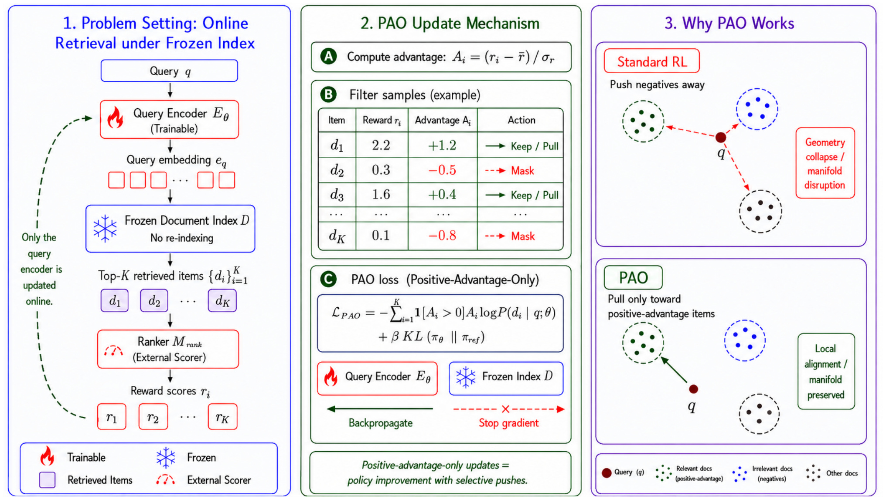
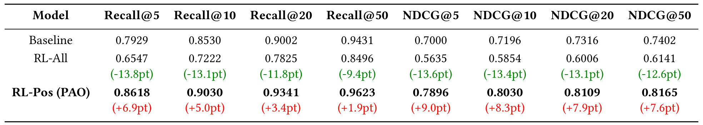
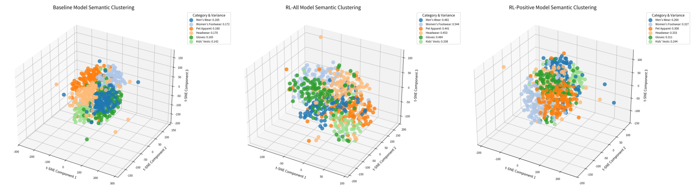
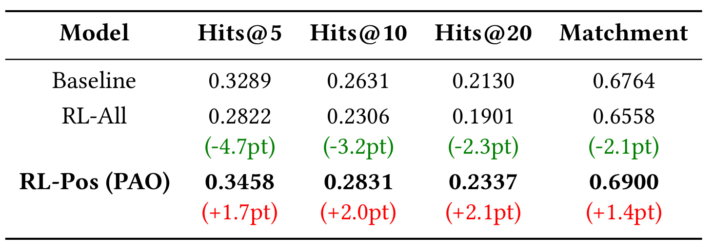
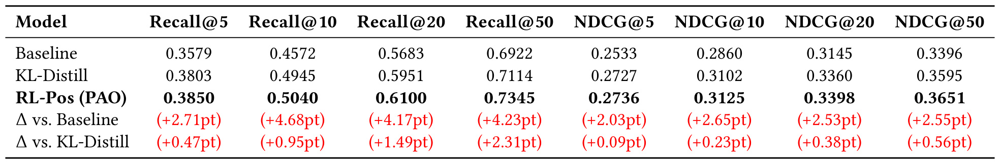
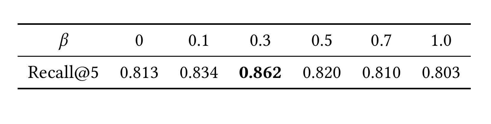
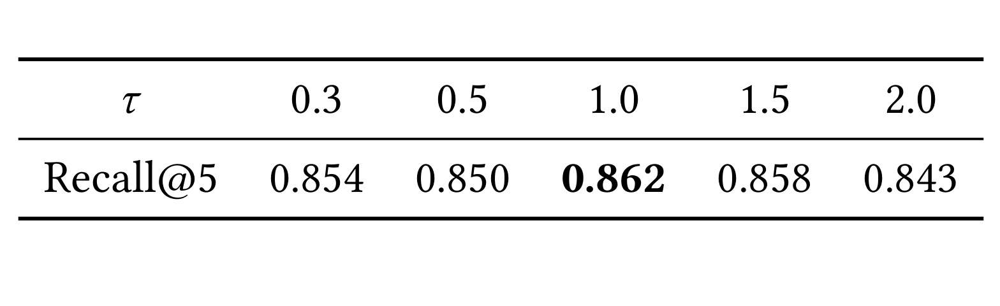

Learning from What You Retrieve: Online RL Fine-Tuning for Semantic Retrieval
论文中文译名为《从检索结果中学习：语义召回的在线强化学习微调》。作者为 Shaowei Wei、Chong Huang、Songtao Fang、Jin Zhang、Zhuojun Wang 和 Chengfu Huo，均来自阿里巴巴集团。论文于 2026 年 8 月 31 日公开，收录于 CIKM 2026，DOI 为 10.1145/3799682.3839929，论文入口为 arXiv:2608.30753。本轮未核验到独立项目页或代码仓库。这是一篇针对工业语义召回约束的短论文：它不试图把召回器整体换成生成式模型，而是追问在文档索引不能重建时，怎样把精排反馈稳定地反传给查询编码器。
大规模电商检索中，双编码召回优化的是对比相似度，而下游精排学到的是更细粒度的相关性偏好；当亿级商品向量索引因重建成本而必须冻结时，标准策略梯度对低奖励样本的“推远”更新会把查询向量推入缺少语义锚点的区域，从而破坏预训练表示空间。
1. 背景和问题
大规模搜索与推荐通常是两阶段链路。第一阶段用双编码器分别把查询和文档投影到同一向量空间，借助最大内积搜索（MIPS）从海量候选中快速取回 Top-K；第二阶段再用交叉编码器或更重的排序模型做精细匹配。这种拆分解决了效率问题，却留下了目标不一致：召回器多由 InfoNCE 一类对比目标训练，擅长建立全局语义邻域；精排则能在查询与单个文档的深层交互中捕获属性、意图、时效性与商业规则。如果召回阶段根本没有把精排喜欢的商品带进候选，后者再强也无法挽回。
常见的对齐路线是知识蒸馏：把精排分数变成教师分布，要求双编码召回器模仿。但固定候选集上的静态蒸馏不会自然告诉模型：当召回器参数改变后，它新的 Top-K 会是什么，而这批新候选又会得到怎样的精排评价。论文因此将查询编码器视为策略，在微调过程中用当前策略实际取回的候选接受精排打分，再以强化学习更新策略。本文的“online”主要指训练时候选由当前检索策略动态产生，而不是论文已报告真实流量的在线 A/B 实验。
工业系统的硬约束让问题更棘手。文档端往往是亿级甚至更大的商品向量索引，每次参数更新后重算全部文档向量、重建索引并完成分布式切换，代价过高。论文因此冻结文档编码器与索引，只改查询编码器。这一设定有很强的工程价值，但也打破了对比学习中常被默认的“双边一起塑形”条件：文档是不动的锚点，所有适配都由查询向量承担。
标准 REINFORCE 直觉上会同时奖励好候选、惩罚差候选，但论文观察到 RL-All 在这个设定下性能大幅恶化。关键不是“负样本没有信息”，而是其梯度的几何语义不完整：它只说查询要离某个低奖励文档更远，却不说应当去哪个有效语义区域。高维空间有大量都能降低该内积的方向，但其中许多方向并不对应任何已学到的商品语义。论文把这种簇结构被打散、类内方差增大的退化称为 Geometry Collapse；它并非字面上所有点收缩到一处，而是预训练语义流形失去可用结构。
这种失配不只是两个损失函数名称不同。召回器的输出会先经过 Top-K 截断，精排只能评价已经被取回的局部候选；当查询策略发生变化，可见候选集也随之改变。这使得奖励分布是策略依赖的，不能把精排的一次静态打分等同于整个语料库上的完整相关性函数。标准 RL 对负优势的强制推远，实际上是在这个局部视野下做全局表示移动；局部反馈和全局几何之间的尺度不对称，是风险被放大的另一个原因。
从生产发布角度看，冻结索引还意味着召回器并非一个可以整体原子更换的模型文件。查询编码器新版本一旦与旧文档向量不再兼容，所有召回流量都会暴露在同一个坐标系错位中。因此一个可用方法必须同时满足三个要求：不重建文档向量，确实能吸收当前精排偏好，并且在未见查询上不破坏原来的语义泛化。PAO 的正优势掩码主要回应第二与第三个要求，而其运行前提则来自第一个约束。
另一个容易混淆的点是“排名一致”不等于“召回表示完全复制精排”。双编码器必须继续承担大规模向量检索的泛化与效率，精排反馈只应在这一全局结构上做局部修正。如果过度追随当前精排，查询端可能在训练列表上提分，却失去对新查询和长尾商品的语义迁移能力。所以论文将“保持全局拓扑”与“学到精排偏好”放在同一目标中，而不是只报告精排教师分数拟合程度。
因此，PAO 要回答的不是“能否从精排学习”这个宽泛问题，而是一个更精确的稳定性问题：在文档几何完全不动的前提下，能否只用具有明确语义落点的梯度改善查询端？作者的答案极其简洁：只保留高于当前列表基线的正优势样本，把查询拉向已存在的高奖励文档，并用 KL 散度限制整体策略漂移。
2. 方法
2.1 RL 建模：把 Top-K 召回列表视为宏动作
论文将查询编码器 $E_Q(\cdot;\theta)$ 定义为策略 $\pi_\theta$。给定查询 $q$，编码器产生 $e_q$；文档向量 $e_{d_i}$ 已预先建好并冻结在索引 $D$ 中。这个 episodic MDP 不展开长时序动作，而是将一次列表取回与奖励反馈视为一个训练回合。查询与候选的打分是内积：
符号解释：$s_i$ 是查询对文档 $d_i$ 的召回相似度，$e_q$ 是可训练查询向量，$e_{d_i}$ 是冻结文档向量，$\top$ 表示内积。这个简单式子是几何问题的根：梯度只能移动 $e_q$，不能让 $e_{d_i}$ 同步适应。因此每一次分数改变都是在固定坐标系中重新安置查询。
MIPS 按 $s_i$ 取回列表 $L_q=\{d_1,\ldots,d_k\}$，论文将整个 Top-K 列表当作一次宏动作，而不是把每个文档当成一步自回归决策。这个近似保留了真实召回器的列表输出形式，再在列表内用带温度的 Softmax 构造策略概率：
符号解释：$P(d_i\mid q;\theta)$ 是候选 $d_i$ 在当前检索列表中的归一化概率，$L_q$ 是当前策略取回的 Top-K，$\tau$ 是温度。$\tau$ 较小时概率更尖锐，梯度更集中于高分项；$\tau$ 较大时候选更平滑，但奖励区分会被稀释。注意这不是在整个文档库上精确归一化，而是对当前取回列表的局部建模；策略学到的反馈因此受当前召回可见域限制。
训练中，精排模型 $M_{\mathrm{rank}}$ 对这批当前候选评分，然后只向查询端回传；推理中，召回链路仍是查询编码、MIPS 和冻结索引，不需要把精排器塞进第一阶段每次请求。这一设计的核心不是用 RL 替换召回，而是用当前真实召回结果作为反馈载体，对齐召回器与精排器。

Figure 1 把信息流分成三块。左侧是实际系统约束：查询经可训练编码器得到 $e_q$，在冻结索引中取回 $d_1\ldots d_K$，再由外部精排器产生 $r_1\ldots r_K$，虚线说明只有查询端被更新。中间用一个示例列表展示掩码：$d_1$ 和 $d_3$ 的优势为正，保留为拉近梯度；$d_2$ 和 $d_K$ 的优势为负，直接停止梯度。右侧则对比了两种几何效果：标准 RL 对多个负样本同时推远，查询可能落入簇外空白区；PAO 只把它拉向一个已存在的正优势文档簇。图中的“pull”并不等于文档端同时变动：绿色更新箭头最终仅改变查询编码器，这正是系统能避免重建索引的原因。中间面板还明确显示 KL 锺定与正优势项同属一个损失，所以屏蔽负梯度并不代表放弃对整体策略偏移的控制。
2.2 奖励与几何坍缩：负优势为何是破坏性推力
精排器给每个取回文档一个相关性奖励 $r_i=M_{\mathrm{rank}}(q,d_i)$。作者在列表内对奖励标准化，以降低不同查询分数尺度造成的方差。这一处理不需要新增人工标注，但它假设精排分数在同一候选列表内具有可比性：
符号解释：$A_i$ 是文档 $d_i$ 的标准化优势，$r_i$ 是精排奖励，$\bar r$ 与 $\sigma_r$ 分别是当前列表奖励的均值与标准差。因此“正”表示高于当前列表平均水平，并不意味着文档在绝对意义上完全相关。这是 PAO 的一个重要边界：它改善的是当前可见候选中的相对选择。
标准列表策略梯度对所有样本使用同一目标，正优势与负优势只通过 $A_i$ 的符号区分更新方向，并不考虑文档空间是否可以配合变形：
符号解释：$\mathcal{L}_{\mathrm{all}}$ 是 RL-All 损失，$k$ 是取回深度，$A_i$ 决定第 $i$ 个候选项梯度的方向与强度，$\log P$ 是对数策略概率。当 $A_i>0$ 时，降低损失会提高 $d_i$ 的概率，也就是增大 $e_q$ 与 $e_{d_i}$ 的内积；当 $A_i<0$ 时，目标会压低其概率，使查询向量远离该文档。
如果文档编码器也能训练，或者同时存在明确的正簇对照，这个推力可以被结构化约束。在冻结索引中，它只有局部的“不要靠近这里”，没有全局的“应该去哪里”。而且多个负优势文档的推力会在高维中叠加，导致查询离开预训练时形成的密集语义簇。论文诊断的是更新方向缺少有效语义锚点，而不是简单地说“不能用负样本”。后一种更宽的结论并没有被本文证明。
2.3 PAO：只保留正优势拉近，再用 KL 锺定参考策略
PAO 对上式做了一个定向裁剪：在奖励标准化之后，用指示函数把所有 $A_i\leq0$ 的项置零，因而只使高于当前列表均值的文档参与策略更新；同时加上相对预训练参考策略的 KL 约束：
符号解释：$\mathcal{L}_{\mathrm{pos}}$ 是 PAO 损失，$\mathbf{1}(A_i>0)$ 是正优势指示函数，$\pi_\theta$ 是正在训练的查询策略，$\pi_{\mathrm{ref}}$ 是预训练参考策略，$D_{\mathrm{KL}}$ 度量两者分布差异，$\beta$ 控制锺定强度。第一项只完成有锚点的局部拉近，第二项防止策略为追逐当前精排奖励而整体偏离预训练分布。
这个目标有两层稳定性。第一层是几何稳定：每次被保留的更新都指向冻结索引中真实存在的文档向量，因而有明确的语义落点。第二层是策略稳定：即便多次局部拉近累积起来，KL 项也限制新策略与参考策略的整体偏差。表 4 显示 $\beta=0$ 时仍不如 $\beta=0.3$，说明“只拉不推”并不自动免疫奖励噪声与过拟合。
训练与推理的分工很清楚。训练时需要反复取回 Top-100、调用奖励模型、计算列表内优势和 KL 项；推理时只部署更新后的查询编码器，文档向量与 ANN 索引继续复用。这使得 PAO 对“召回模型需快速滚动，商品索引不能高频重建”的生产环境很有针对性。但它不会创造索引中没有的内容，也不会纠正奖励模型自身的偏差；它只是更稳定地把现有奖励偏好折叠到查询端。
3. 实验结果
3.1 数据、模型与对照设置
主实验使用某大型电商平台的匿名搜索日志，包含 100 万个训练查询和 5 万个测试查询。查询与文档编码器从 GTE-Base 初始化，奖励模型是在线微调的 BGE-Reranker。文档索引冻结，每个查询取 Top-100，只更新查询编码器；训练 2 个 epoch，batch size 为 16，学习率 $2\times10^{-5}$，warmup 100 步，默认 $\beta=0.3$。三个主要对照是：用域内查询-文档对做 InfoNCE 微调的 Baseline；对所有正负优势样本都更新的 RL-All；以及只保留正优势的 RL-Pos（PAO）。
公开泛化实验使用 MS MARCO passage ranking，同样从 GTE-Base 开始，使用 BGE-Reranker 作为奖励模型，并保持冻结索引、只更新查询端的设置。这部分额外增加 KL-Distill：在同一 Top-100 候选、同一教师和训练设置下，直接拟合精排诱导的软分布。这个对照很重要，因为它把“拿到了更强教师信号”与“正优势筛选的优化方式更稳定”部分区分开。
3.2 工业数据：RL-All 全面退化，PAO 在浅层截断增益最大

Table 1 的证据模式非常整齐。Baseline 的 Recall@5/10/20/50 为 0.7929/0.8530/0.9002/0.9431，NDCG@5/10/20/50 为 0.7000/0.7196/0.7316/0.7402。RL-All 的八个指标全部下降：Recall 分别减少 13.8、13.1、11.8 和 9.4 个点，NDCG 分别减少 13.6、13.4、13.1 和 12.6 个点。这不是某个截断位置的小波动，而是从头部结果到更深列表的系统性退化，与“查询向量整体离开有效语义簇”的诊断一致。PAO 则在八个指标上都超过 Baseline：Recall@5 到 0.8618，增加 6.9 个点；NDCG@5 到 0.7896，增加 9.0 个点；即便到 @50，Recall 与 NDCG 仍分别增加 1.9 和 7.6 个点。
增益随 Recall 截断加深而缩小，值得单独理解。PAO 不是把任意相关文档从索引外变出来，它更像是把高奖励候选向列表前部重排，因而 @5 的改善最显著；到 @50 时，Baseline 已有 0.9431 的高召回，绝对提升空间受到上限限制。但 NDCG@50 仍增加 7.6 个点，说明改善不只是“多找到几个”，还涉及相关项在列表中的顺序。表格支持 PAO 比 RL-All 稳定，但没有误差条、多次随机种子或显著性检验，因此不能从单表判定数值方差。
3.3 几何与语义一致性：机制证据与 LLM-Judge 证据
作者从 6 个商品类别中随机抽取数百个查询，将 Baseline、RL-All 和 PAO 的查询向量用 t-SNE 降到三维。这一实验直接面向方法的因果故事：如果 RL-All 的问题真来自语义几何被破坏，那么不应只在排名指标上看到下降，还应该看到类别簇的离散。

Figure 2 左图的 Baseline 保留了相对紧凑的类别结构，六类的图例方差约在 0.142–0.172；中图 RL-All 出现大量散点和簇间结构破坏，方差扩大到约 0.338–0.544；右图 PAO 将范围压回约 0.244–0.333，宏观簇结构明显比 RL-All 完整，但比 Baseline 仍更松散。作者将这一适度的类内变化解释为有益适应：查询从粗粒度类别中心移向精排高奖励子区域。这个解释与表 1 的排名改善一致，但 t-SNE 对超参数和随机种子敏感，降维图本身不能证明高维流形的因果变化；它更适合作为与检索指标互相印证的诊断证据。
为了补充传统标注相关性，论文用 Qwen3-235B-A22B 作为评审，判断取回商品是否完整满足查询意图。Hits@K 统计 Top-K 中相关项，Matchment 衡量列表对多个需求点的平均满足程度。这一视角更接近精排模型提供的细粒度信号。

Table 2 中，Baseline 的 Hits@5/10/20 为 0.3289/0.2631/0.2130，Matchment 为 0.6764。RL-All 对应下降 4.7、3.2、2.3 和 2.1 个点，说明几何退化不是只伤害一个离线指标，也伴随更差的意图满足。PAO 分别达到 0.3458/0.2831/0.2337 和 0.6900，相对 Baseline 提高 1.7、2.0、2.1 和 1.4 个点。Hits 增益从 @5 到 @20 略有扩大，与 PAO 帮助发现更难相关项的说法一致。但这组指标并非客观真人标注：论文没有详细报告评审提示词、与人类标注的一致性、重复调用方差或奖励模型与评审模型的相关性，所以它是有用的第二视角，不应被当作无偏的最终真值。
3.4 MS MARCO：超过基线，也超过直接 KL 蒸馏

Table 3 表明工业数据上的方向可以迁移到公开数据。相对 Baseline，PAO 的 Recall@5/10/20/50 分别增加 2.71、4.68、4.17 和 4.23 个点，NDCG@5/10/20/50 分别增加 2.03、2.65、2.53 和 2.55 个点；最终 Recall@50 从 0.6922 升到 0.7345，NDCG@50 从 0.3396 升到 0.3651。KL-Distill 也明显优于 Baseline，说明精排教师信号本身有价值；而 PAO 相对 KL-Distill 仍在八个指标上全部领先，Recall 增益为 0.47、0.95、1.49 和 2.31 个点，NDCG 增益为 0.09、0.23、0.38 和 0.56 个点。
这个对比支持“怎样使用精排反馈”与“是否有精排反馈”同样重要。深截断上 PAO 对蒸馏的优势更大，可能意味着它在当前策略取回的候选上使用相对优势，比全量拟合教师软分布更能保持原召回空间。但 NDCG@5 对 KL-Distill 仅多 0.09 个点，这是一个很小的差值；在缺少显著性与多种子统计时，不宜将每个截断位置都解读为确定性优势。更稳妥的结论是：在这套公开基准设置下，PAO 没有用牺牲浅层排序来换取深层召回，而是所有已报指标同向改善。
3.5 敏感性、可复现边界与未完成的证据链

Table 4 显示 $\beta$ 的影响并非单调。不加 KL 时 Recall@5 为 0.813，$\beta=0.1$ 升到 0.834，$\beta=0.3$ 达到最高的 0.862；之后权重继续增大，指标依次降到 0.820、0.810 和 0.803。作者将低权重的损失解释为对排序噪声的过拟合，将高权重的损失解释为策略被参考模型过度约束。这个 U 形反面说明 KL 不是可有可无的保险项，而是与奖励信号强度耦合的关键超参数。从差值看，$\beta=0.3$ 比无约束高 4.9 个点，却比 $\beta=1.0$ 高 5.9 个点，两端损失都不小。不过论文只报告 Recall@5，没有展示其他指标、不同奖励器或不同索引新鲜度下最优 $\beta$ 是否稳定。

Table 5 的温度扫描同样显示中间值最好：$\tau=0.3/0.5/1.0/1.5/2.0$ 时 Recall@5 分别为 0.854/0.850/0.862/0.858/0.843。太低的温度让列表分布集中在少数已有高分项，当前策略对其他候选的探索不足；太高的温度则使概率过度平滑，优势信号与打分差异被稀释。$\tau=1.0$ 与 $\beta=0.3$ 都在本工业设定下取得 0.862，但两张表是单变量扫描，没有报告 $\tau$ 与 $\beta$ 的二维交互。复现时不应直接把 1.0 和 0.3 视为跨数据集常数，而应根据候选分数标度、奖励噪声和列表深度重新校准。
整体证据链覆盖了工业离线指标、LLM 语义评审、降维几何、公开数据和两个关键超参数，对一篇 6 页论文而言相当紧凑。但题目中的“online”不应被扩写为生产上线效果：文章没有给出真实用户流量实验、点击或转化指标、索引更新节奏、奖励服务延迟、训练成本或回滚策略。它证明的是查询端 on-policy 微调在离线召回指标上可行，距离长期线上闭环仍有明确差距。
4. 总结
4.1 我的判断与迁移价值
PAO 的主要价值是把一个生产约束转换成可验证的优化选择：既然文档空间不能动，那么就不要对查询施加没有目标落点的负优势推力；只向已存在的高奖励文档拉近，再以 KL 约束整体漂移。它的新意不在复杂算法，而在对梯度几何与索引工程边界的结合。主表中 RL-All 的大幅退化、PAO 的全指标改善，以及几何图的一致变化，构成了有说服力的初步证据。
对推荐与搜索系统，这套思路最适合“精排快速演化、召回索引更新昂贵”的链路。可以把精排对更细意图、商业目标或多目标效用的判断作为奖励，但应将正优势屏蔽、参考策略距离、查询向量范数与类内方差一起监控。对 RAG 或 Agent 检索，也可把生成器对证据有用性的评分反馈给检索器，同样只更新查询侧以复用大型向量库。但此时奖励偏置会直接变成召回偏置，必须保留多样性、来源质量和安全性约束。
4.2 局限、风险与后续验证
局限与风险至少有以下六点：
- 索引覆盖上限。 PAO 只能在已存文档向量中重新对齐；如果相关商品未入库、已下架或表示过时，正优势筛选无法补回候选缺失。
- 奖励偏差会被更高效地传播。 如果精排偏好标题党、头部商品或短期点击，PAO 可能稳定地把这些偏差下沉到召回阶段，需要多目标奖励与安全阈值。
- 只学正优势可能遗漏有用的负反馈。 筛掉所有负优势是稳定但粗粒度的处理，并未区分硬负样本、噪声负样本与安全禁止项；未来可考虑带几何约束的有界推远。
- 统计报告不足。 论文没有多种子方差、置信区间或显著性检验，超过 KL-Distill 的某些差值较小，需要重复试验才能判断稳健性。
- 机制诊断仍偏间接。 t-SNE 只是降维投影，LLM-Judge 又受提示词和模型偏好影响；论文没有报告高维邻域保真度、向量各向异性或人工意图标注。
- 线上闭环尚未证明。 作者提出召回器更新可以向精排暴露更难候选，精排再反过来提供更锐利奖励，但这个迭代环路在文中被明确留作未来工作。
后续跟进建议优先做四件事。第一，在同一冻结索引上重复 Baseline、RL-All、KL-Distill 和 PAO，使用至少三个随机种子，同时记录 Recall/NDCG、查询向量范数、高维邻居保真度与类内方差，检查性能与几何是否同步变化。第二，对 $\beta$ 与 $\tau$ 做二维扫描，并改变 Top-K、奖励尺度和负优势占比，确认默认点不是特定数据的偶然最优。第三，把精排奖励拆成相关性、多样性、新鲜度与风险子目标，为每项设置离线护栏，防止 PAO 对单一奖励的快速放大。第四，在小流量阴影或 A/B 环境中观察索引新鲜度、训练周期、流量偏移和回滚条件，再判断“只更新查询编码器”是否真能在持续闭环中保持稳定。